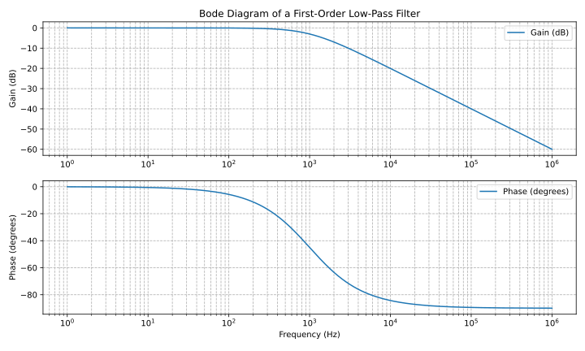
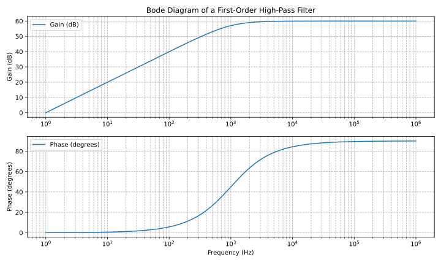

Elektronik 102
Zeitempfindliche Komponenten
Nachdem wir im ersten Teil das wichtigste Bauteil, den Widerstand, betrachtet und ausführlich beschrieben haben Widerstand, im ersten Teil ausführlich beschrieben wurde, wollen wir uns nun das nächste wichtige Bauteil, den Kondensator, werfen. Kondensatoren sind ebenfalls passive Bauelemente, das heißt sie verstärken ein Signal nicht.
Elektrostatisches Feld
Nimmt man zwei Metallflächen und stellt sie nebeneinander, mit einer kleinen dünnen Schicht einer nichtleitenden Substanz dazwischen, entsteht ein elektrostatisches Feld.
Der Aufbau des elektrostatischen Feldes erfolgt über eine Gleichstromquelle, im Bild unten dargestellt durch den Generator G. Die Quellenspannung des Generators verschiebt die Elektronen, die sich im Draht und in den Metallplatten befinden. Auf diese Weise entsteht auf der rechten Platte ein Überfluss an Elektronen (-Q), während auf der anderen Platte ein Mangel der gleichen Menge, +Q, entsteht.
Für kurze Zeit fließt ein Ladestrom mit dem Momentanwert i, der in umgekehrter Richtung eine Strommenge +Q fördert, eine Strommenge +Q fördert. Der Ladestrom i wird Null, wenn sich die Strommenge +Q und die -Q erzeugte Spannung gleich groß ist.
Das elektrostatische Feld bleibt auch nach dem Trennen von der Gleichstromquelle bestehen, was sich mit einem einem Voltmeter mit hoher Impedanz überprüft werden kann: Das elektrostatische Feld entsteht durch die getrennten Ladungen +Q, -Q. Die vorhandene Spannung zeigt, dass in dem Feld Energie gespeichert ist. Diese Anordnung wird als Plattenkondensator bezeichnet.
Bild:../images/electronic_basics/electrostatic_field.svg[width=300]
Referenz: Dieter Zastrow, Elektrotechnik,16.Auflage, S. 120. Es ist ein weiteres elektronisches Grundelement, das häufig in elektronischen Geräten verwendet wird. Die dazwischen liegende Substanz wird als Dielektrikum bezeichnet.
Kapazität
Die Grundgleichung zur Berechnung der Kapazität, der Eigenschaft Nr. 1 eines Kondensators, lautet wie folgt. Die Kapazität C des Kondensators gibt das interessante Verhältnis zwischen der gespeicherten Ladungsmenge Q und der Ladespannung spannung U_c .
\[C= \frac{Q}{U_c}\]
Parallel- und Reihenschaltung
Bei der Parallelschaltung von Kondensatoren addieren sich die Kapazitäten zur Gesamtkapazität.
\[C= C_{1} + C_{2} + … \]
Bei der Reihenschaltung ist der Kehrwert der Gesamtkapazität gleich der der Summe der Kehrwerte der Einzelkapazitäten.
\[ \frac{1}{C}= \frac{1}{C_{1}} + \frac{1}{C_{2}} + … \]
Der Kondensator und die Spulen
Die nun vorgestellten Elemente haben einen Bezug zur Statik des (ohmschen) Widerstandes. Nun rückt auch die Zeit in den Fokus, denn sowohl Kondensator als auch Spulen sind in gewissem Sinne zeitempfindliche Elemente sind. Normalerweise würden wir also mit der Einführung des Kondensators mit all seinen Implikationen beginnen, und dann zu den Spulen übergehen, die die dann anschließend eingeführt werden. Stattdessen zeigen wir in diesem Beitrag beide in einer Gegenüberstellung da sie komplementäre Eigenschaften haben.
Leiter |
Spule |
Schaltsymbol eines Kondensators |
Schaltsymbol einer Spule |
Bild:../images/electronic_basics/capacitor.jpg[width=„300px“] |
Bild:../images/electronic_basics/coil.jpg[width=„300px“] |
speichert Energie in einem elektrischen Feld |
speichert Energie in einem magnetischen Feld |
führt in Phase |
verzögert in Phase |
blockiert im Gleichstrombetrieb |
im Gleichstrombetrieb wächst der Strom, während die Spannung mit der gleichen Geschwindigkeit abgenommen wird |
Frequenzabhängige Netzwerke (Filter)
Eine häufige und sehr beliebte Anwendung von Kondensatoren sind Filter, Einfache Filter erster Ordnung, wie hier gezeigt, werden aus einem Widerstand und einem Kondensator aufgebaut. Als nächstes wollen wir den Frequenzgang eines Filters berechnen Frequenzgang eines Filters berechnen, indem wir die Frequenzgangfunktion ermitteln, das ist die Ausgangsspannung geteilt durch die Eingangsspannung - Dies wird anhand der folgenden Beispiele deutlicher.
Tiefpassfilter
Tiefpass 1. Ordnung
Frequenzgang
\[ H(\omega) = \frac{U_{out}}{U_{in}} = \frac{(1/j\omega C)}{(R+ 1/j \omega C)} = \frac{(1/j\omega C)\cdot j \omega C}{(R+ 1/j \omega C) \cdot j \omega C } = \frac{1}{1+ j\omega RC } = \frac{1}{1+ j \omega/ \omega_g}\]
Grenzfrequenz (mit Beispielwerten von R=1kOhm, C= 1µF)
\[ \omega_g = \frac{1}{RC} = \frac{1}{1 \cdot 10^3 \cdot 1 \cdot 10^6}= 10^3= 1000 \cdot 1/s\]

Um das Bode-Diagramm für den oben gezeigten Tiefpass zu erzeugen, brauchen wir eine Hilfe, Dazu installieren Sie bitte matplotlib mit dem folgenden Befehl: ''' pip install matplotlib
und führen sie folgendes Skript aus:
import matplotlib.pyplot as plt
import numpy as np
# Define the transfer function of a first-order low-pass filter
def lowpass_first_order(frequency, cutoff_frequency):
return 1 / np.sqrt(1 + (frequency / cutoff_frequency)**2)
# Frequency range for the Bode diagram (logarithmic scale)
frequency = np.logspace(0, 6, 1000) # From 10^0 to 10^6 Hertz
# Cutoff frequency of the low-pass filter
cutoff_frequency = 1000 # Example value - You can set your own value here
# Calculate the gain in decibels (20 * log10(Amplitude))
gain_db = 20 * np.log10(lowpass_first_order(frequency, cutoff_frequency))
# Calculate the phase response in degrees (angle)
phase_deg = np.degrees(np.arctan(-frequency / cutoff_frequency))
# Create the Bode diagram with both gain and phase
plt.figure(figsize=(10, 6))
# Gain plot (magnitude)
plt.subplot(2, 1, 1)
plt.semilogx(frequency, gain_db, label='Gain (dB)')
plt.ylabel('Gain (dB)')
plt.title('Bode Diagram of a First-Order Low-Pass Filter')
plt.grid(which='both', axis='both', linestyle='--')
plt.legend()
# Phase plot
plt.subplot(2, 1, 2)
plt.semilogx(frequency, phase_deg, label='Phase (degrees)')
plt.xlabel('Frequency (Hz)')
plt.ylabel('Phase (degrees)')
plt.grid(which='both', axis='both', linestyle='--')
plt.legend()
plt.tight_layout()
# Save the Bode diagram as an SVG file
plt.savefig('lowpass_bode_phase.svg', format='svg')
# Optionally, display the Bode diagram
plt.show()
Hochpass-Filter
Hochpass-Filter erster Ordnung
Frequenzantwort
\[ H(\omega) = \frac{U_{out}}{U_{in}} = \frac{R}{R+ 1/j\omega C} = \frac{j \omega C}{1+ j \omega RC} = \frac{j\omega / \omega_g}{1+ j\omega/ \omega_g}\]
Cutoff Frequenz (mit Beispiel Werten R=1kOhm, C= 1µF)

Und hier wieder ein Python Skript, diesmal für den Hochpass:
import matplotlib.pyplot as plt
import numpy as np
# Define the transfer function of a first-order high-pass filter
def highpass_first_order(frequency, cutoff_frequency):
return frequency / np.sqrt(1 + (frequency / cutoff_frequency)**2)
# Frequency range for the Bode diagram (logarithmic scale)
frequency = np.logspace(0, 6, 1000) # From 10^0 to 10^6 Hertz
# Cutoff frequency of the high-pass filter
cutoff_frequency = 1000 # Example value - You can set your own value here
# Calculate the gain in decibels (20 * log10(Amplitude))
gain_db = 20 * np.log10(highpass_first_order(frequency, cutoff_frequency))
# Calculate the phase response in degrees (angle)
phase_deg = np.degrees(np.arctan(frequency / cutoff_frequency))
# Create the Bode diagram with both gain and phase
plt.figure(figsize=(10, 6))
# Gain plot (magnitude)
plt.subplot(2, 1, 1)
plt.semilogx(frequency, gain_db, label='Gain (dB)')
plt.ylabel('Gain (dB)')
plt.title('Bode Diagram of a First-Order High-Pass Filter')
plt.grid(which='both', axis='both', linestyle='--')
plt.legend()
# Phase plot
plt.subplot(2, 1, 2)
plt.semilogx(frequency, phase_deg, label='Phase (degrees)')
plt.xlabel('Frequency (Hz)')
plt.ylabel('Phase (degrees)')
plt.grid(which='both', axis='both', linestyle='--')
plt.legend()
plt.tight_layout()
# Save the Bode diagram as an SVG file
plt.savefig('highpass_bode_diagram.svg', format='svg')
# Optionally, display the Bode diagram
plt.show()